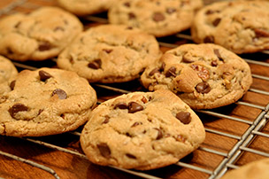

Awesome Chocolate Chip Cookie Recipe

Chocolate chip cookies are a go-to favorite dessert, sweet snack, or after-school treat. With our easy, three-step recipe, you'll have soft and chewy chocolate chip cookies to serve and enjoy in no time! Making chocolate chip cookies has never been easier.
Ingredients
- 2 1/4 cups all-purpose flour
- 1/2 teaspoon baking soda
- 1 cup (2 sticks) unsalted butter, room temperature
- 1/2 cup granulated sugar
- 1 cup packed light-brown sugar
- 1 teaspoon salt
- 2 teaspoons pure vanilla extract
- 2 large eggs
- 1 cups (about 12 ounces) semisweet and/or milk chocolate chips
Instructions
- Preheat oven to 350 degrees. In a small bowl, whisk together the flour and baking soda; set aside. In the bowl of an electric mixer fitted with the paddle attachment, combine the butter with both sugars; beat on medium speed until light and fluffy.
- Reduce speed to low; add the salt, vanilla, and eggs. Beat until well mixed, about 1 minute. Add flour mixture; mix until just combined. Stir in the chocolate chips.
- Drop heaping tablespoon-size balls of dough about 2 inches apart on baking sheets lined with parchment paper.
- Bake until cookies are golden around the edges, but still soft in the center, 8 to 10 minutes. Remove from oven, and let cool on baking sheet 1 to 2 minutes. Transfer to a wire rack, and let cool completely. Store cookies in an airtight container at room temperature up to 1 week.
Source: Martha Stewart: Soft and Chewy Chocolate Chip Cookie Recipes